Tài liệu bài tập
Notebook thực nghiệm và các tệp kết quả được xuất trong quá trình EDA, Data Preprocessing, Model Training và Evaluation.
Notebook
Notebook chứa toàn bộ quy trình phân tích dữ liệu, tiền xử lý, huấn luyện và đánh giá năm mô hình.
PDF report
Báo cáo riêng của bài tập lớn này
YouTube
Video Public hoặc Unlisted · khuyến nghị 5–10 phút
Mô tả tập dữ liệu
Nghiên cứu sử dụng Adult Census Income Dataset, được cung cấp bởi UCI Machine Learning Repository. Dataset chứa thông tin nhân khẩu học và nghề nghiệp của các cá nhân, phục vụ bài toán dự đoán nhóm thu nhập hằng năm.
- Nguồn dữ liệu
- UCI Machine Learning Repository — Adult ↗
- Số mẫu ban đầu
- 48.842
- Đặc trưng đầu vào
- 14 đặc trưng
- Biến số
- 5 đặc trưng
- Biến phân loại
- 9 đặc trưng, gồm 1 biến thứ bậc
- Biến mục tiêu
income- Nhãn thu nhập
<=50Kvà>50K- Bài toán
- Phân loại nhị phân
1.1. Các đặc trưng đầu vào
Notebook nạp dữ liệu bằng fetch_ucirepo(id=2) với ucimlrepo==0.0.7.
Ký hiệu ? được chuyển thành giá trị thiếu. Kiểu biến trong bảng phản ánh cách xử lý trong thực nghiệm.
| Đặc trưng | Kiểu dữ liệu | Mô tả |
|---|---|---|
age |
Biến số | Độ tuổi của cá nhân. |
workclass |
Danh mục | Loại hình hoặc khu vực làm việc. |
fnlwgt |
Biến số | Final sampling weight được gán cho cá nhân trong dữ liệu điều tra. |
education |
Danh mục | Trình độ học vấn. |
education-num |
Phân loại thứ bậc | Mã số biểu diễn trình độ học vấn. |
marital-status |
Danh mục | Tình trạng hôn nhân. |
occupation |
Danh mục | Nghề nghiệp của cá nhân. |
relationship |
Danh mục | Mối quan hệ của cá nhân trong hộ gia đình. |
race |
Danh mục | Nhóm chủng tộc. |
sex |
Nhị phân | Giới tính của cá nhân. |
capital-gain |
Biến số | Khoản thu nhập từ lãi vốn. |
capital-loss |
Biến số | Khoản thua lỗ từ vốn. |
hours-per-week |
Biến số | Số giờ làm việc mỗi tuần. |
native-country |
Danh mục | Quốc gia xuất thân của cá nhân. |
1.2. Biến mục tiêu
Cột income biểu thị nhóm thu nhập hằng năm. Khi nạp dữ liệu,
notebook loại khoảng trắng bao quanh và dấu chấm cuối nhãn để thống nhất biểu diễn.
| Nhãn thu nhập | Ý nghĩa |
|---|---|
<=50K |
Thu nhập hằng năm nhỏ hơn hoặc bằng 50.000 USD. |
>50K |
Thu nhập hằng năm lớn hơn 50.000 USD. |
Khảo sát toàn cục và kiểm tra tính hợp lệ
2.1. Phân phối nhãn thu nhập
Sau khi chuẩn hóa nhãn, lớp <=50K có 37.155 quan sát (76,07%) và lớp >50K có 11.687 quan sát (23,93%). Tỷ lệ tính trên toàn bộ 48.842 quan sát trước khi lọc.

2.2. Giá trị thiếu
Có 3.620 bản ghi (7,41%) chứa ít nhất một giá trị thiếu và 45.222 bản ghi (92,59%) đầy đủ. Một hàng có thể thiếu ở nhiều cột, vì vậy số ô thiếu theo cột và số hàng có ít nhất một ô thiếu dùng hai cách đếm khác nhau. Các bản ghi được giữ để điền khuyết sau khi chia tập.
| Đặc trưng | Số ô thiếu | Tỷ lệ trên 48.842 hàng |
|---|---|---|
occupation | 2.809 | 5,75% |
workclass | 2.799 | 5,73% |
native-country | 857 | 1,75% |
| Các cột còn lại | 0 | 0,00% |

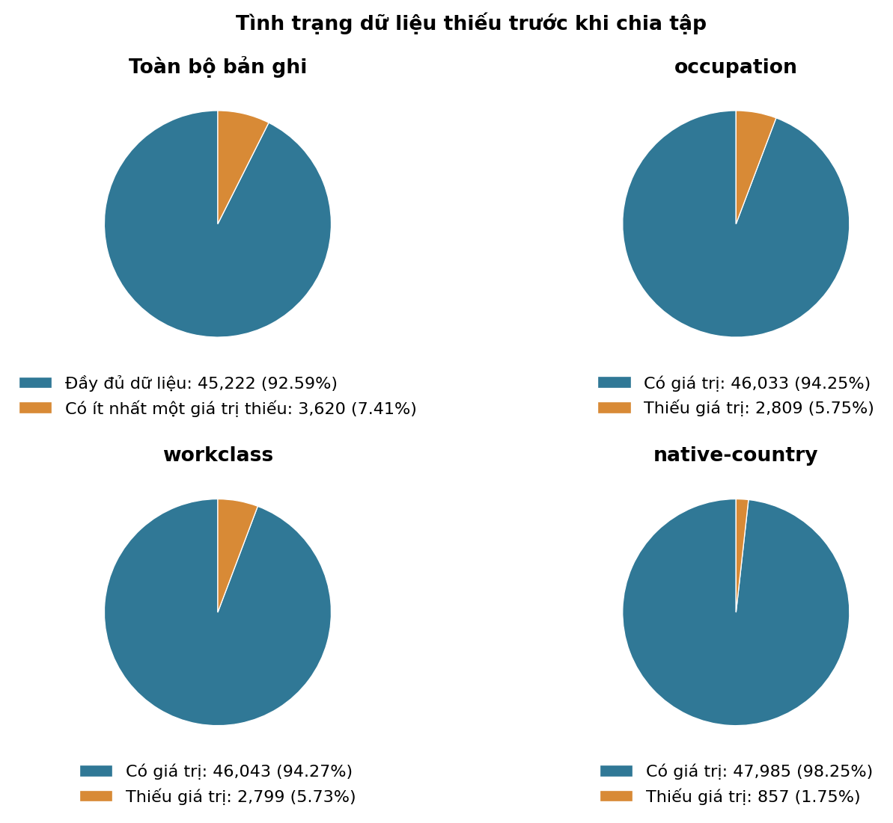
2.3. Bản ghi trùng lặp
So sánh trên toàn bộ cột, kể cả nhãn, cho thấy có 52 lần xuất hiện lặp (0,1065%) và 48.790 bản ghi xuất hiện lần đầu (99,8935%). Nếu tính cả lần xuất hiện đầu tiên của mỗi nhóm trùng thì có 101 hàng thuộc các nhóm này. Các hàng được giữ vì dữ liệu thiếu mã định danh cá nhân và fnlwgt là trọng số khảo sát.

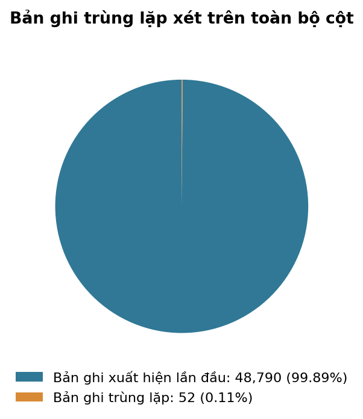
2.4. Kiểm tra giá trị âm
Kiểm tra age, fnlwgt, education-num, capital-gain, capital-loss và hours-per-week. Cả sáu cột đều có 0 giá trị âm. Bước lọc loại 0 hàng và giữ đủ 48.842 quan sát.
Chia tập dữ liệu
Hai lần chia phân tầng dùng stratify và seed 42. Lần đầu giữ 70% cho Train, sau đó chia đều 30% còn lại cho Validation và Test. Phân phối nhãn ở cả ba tập đều xấp xỉ 76,07% và 23,93%.
| Tập | Số quan sát | Tỷ lệ | ≤50K | >50K |
|---|---|---|---|---|
| Train | 34.189 | 70% | 26.008 | 8.181 |
| Validation | 7.326 | 15% | 5.573 | 1.753 |
| Test | 7.327 | 15% | 5.574 | 1.753 |
| Tổng | 48.842 | 100% | 37.155 | 11.687 |
Train dùng để xác định tham số tiền xử lý, chọn đặc trưng và huấn luyện. Validation phục vụ early stopping của XGBoost và MLP. Test được giữ cho đánh giá cuối. Chia theo hàng tạo ba tập chỉ mục tách biệt. Dữ liệu thiếu mã định danh nên mức độc lập theo cá nhân chưa được xác lập.
Khảo sát trên Train và lựa chọn đặc trưng
4.1. Điền giá trị thiếu
Hai bộ điền khuyết học tham số trên Train. Biến số dùng trung vị, còn biến phân loại dùng mode, bao gồm mã thứ bậc education-num. Validation và Test dùng lại tham số đó. Điền đơn trị có thể làm tăng tần suất các mức phổ biến.
| Tập | Trước khi điền | Sau khi điền |
|---|---|---|
| Train | 4.534 | 0 |
| Validation | 919 | 0 |
| Test | 1.012 | 0 |
4.2. Mất cân bằng lớp
Train có 26.008 mẫu lớp <=50K và 8.181 mẫu lớp >50K, tương ứng tỷ lệ đa số trên thiểu số khoảng 3,179:1. Vì vậy, Accuracy cần được đọc cùng các chỉ số riêng cho lớp dương.

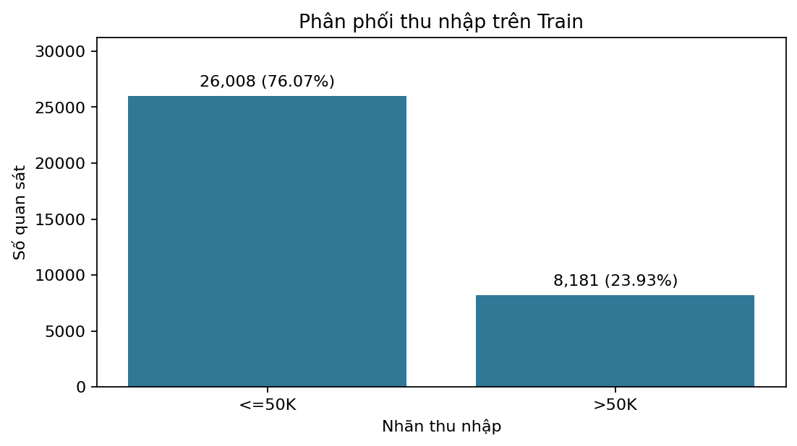
4.3. Phân phối đơn biến
| Đặc trưng | Trung bình | Trung vị | Độ lệch |
|---|---|---|---|
age | 38,65 | 37 | 0,56 |
fnlwgt | 189.940,53 | 178.478 | 1,44 |
education-num | 10,07 | 10 | −0,33 |
capital-gain | 1.046,63 | 0 | 12,19 |
capital-loss | 87,14 | 0 | 4,58 |
hours-per-week | 40,46 | 40 | 0,23 |

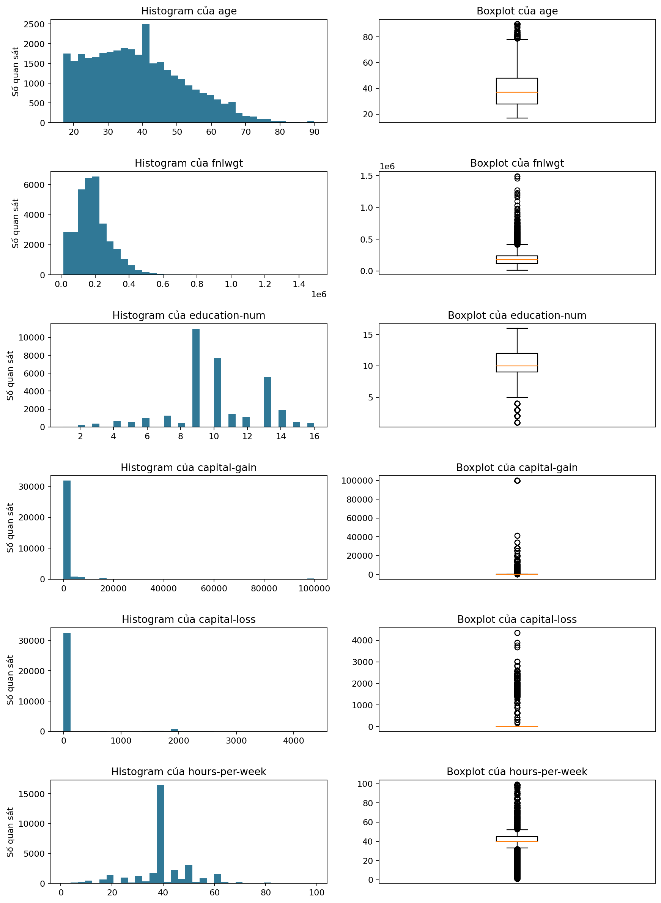
| Đặc trưng | Số mức | Mức phổ biến nhất | Tỷ lệ |
|---|---|---|---|
workclass | 8 | Private | 75,04% |
education | 16 | HS-grad | 32,14% |
education-num | 16 | 9 | 32,14% |
marital-status | 7 | Married-civ-spouse | 45,98% |
occupation | 14 | Exec-managerial | 18,36% |
relationship | 6 | Husband | 40,45% |
race | 5 | White | 85,52% |
sex | 2 | Male | 67,02% |
native-country | 41 | United-States | 91,38% |

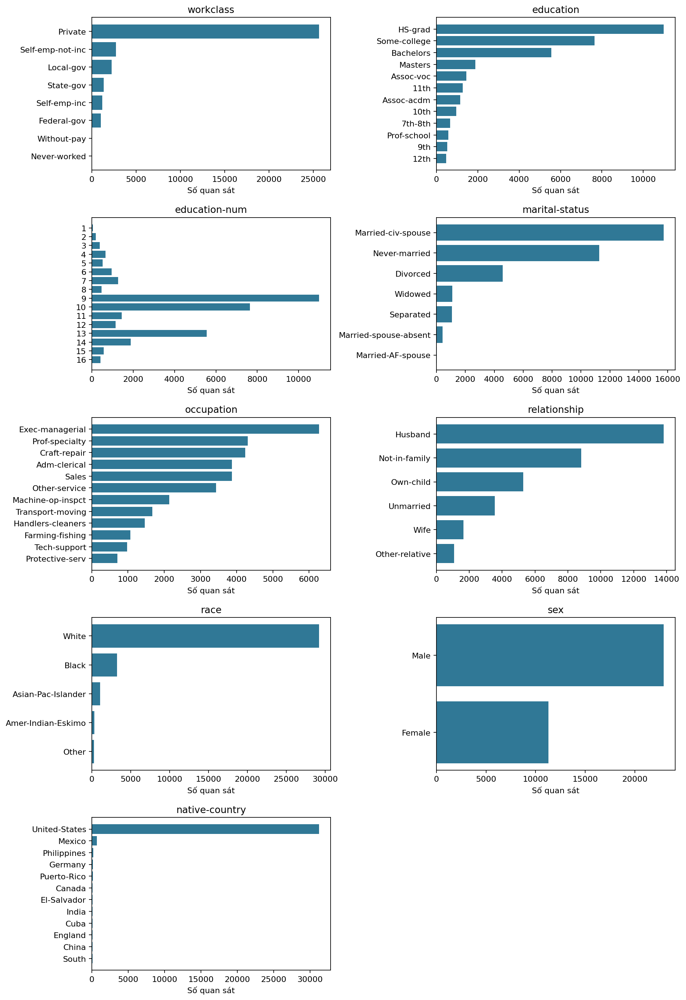
4.4. Giới hạn giá trị cực trị bằng 3 × IQR
Với biến số, hai biên được tính từ Train theo Q₁ − 3 × IQR và Q₃ + 3 × IQR. Các giá trị ngoài biên được đưa về biên gần nhất trên cả ba tập. Các cột có IQR bằng 0 được bỏ qua và mã học vấn thứ bậc nằm ngoài phép tính. Capping giữ nguyên số hàng nhưng có thể thay đổi các giá trị cực trị hợp lệ.
| Đặc trưng | Q₁ / Q₃ | IQR | Biên áp dụng | Train | Validation | Test |
|---|---|---|---|---|---|---|
age | 28 / 48 | 20 | [−32; 108] | 0 | 0 | 0 |
fnlwgt | 117.674 / 238.384 | 120.710 | [−244.456; 600.514] | 149 | 34 | 34 |
capital-gain | 0 / 0 | 0 | Bỏ qua | 0 | 0 | 0 |
capital-loss | 0 / 0 | 0 | Bỏ qua | 0 | 0 | 0 |
hours-per-week | 40 / 45 | 5 | [25; 60] | 4.606 | 996 | 1.029 |
4.5. Mối liên hệ giữa các đặc trưng
Pearson đo tương quan tuyến tính giữa các biến số với ngưỡng |r| ≥ 0,70. Cramér’s V đo mức liên hệ giữa các biến phân loại từ bảng chéo, với ngưỡng V ≥ 0,70. Cặp duy nhất đạt ngưỡng là education và education-num (V = 1,0000). Quy tắc ưu tiên giữ mã thứ bậc nên loại education. Ngưỡng phục vụ sàng lọc đặc trưng và hệ số liên hệ không xác lập quan hệ nhân quả.

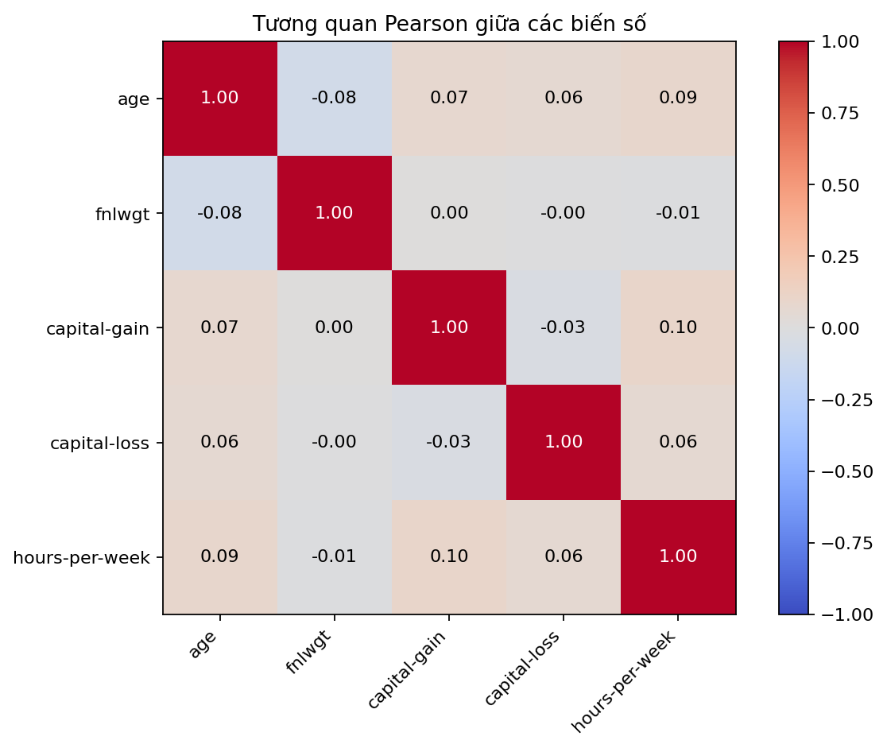

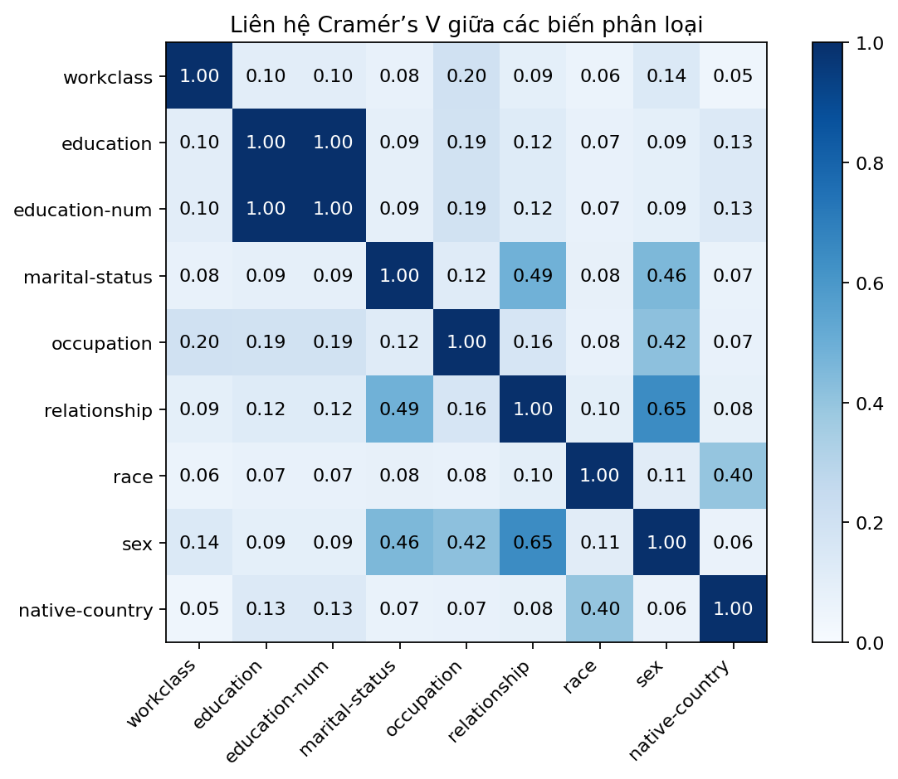
4.6. Mức độ liên quan với nhãn thu nhập
Point-biserial đo tương quan giữa biến số và nhãn nhị phân. Cramér’s V đo liên hệ với nhãn cho các biến phân loại. Mutual Information (MI) ước lượng phụ thuộc thống kê với nhãn, trong đó các biến phân loại được khai báo là rời rạc.
| Đặc trưng | Thước đo | Hệ số | MI (nat) |
|---|---|---|---|
capital-gain | Point-biserial | 0,22209 | 0,08506 |
age | Point-biserial | 0,22803 | 0,06973 |
hours-per-week | Point-biserial | 0,26277 | 0,04479 |
capital-loss | Point-biserial | 0,14734 | 0,03607 |
fnlwgt | Point-biserial | −0,00565 | 0,02835 |
relationship | Cramér’s V | 0,45321 | 0,11393 |
marital-status | Cramér’s V | 0,44661 | 0,10808 |
education-num | Cramér’s V | 0,36729 | 0,06442 |
occupation | Cramér’s V | 0,30286 | 0,05002 |
sex | Cramér’s V | 0,21479 | 0,02550 |
workclass | Cramér’s V | 0,16568 | 0,01215 |
native-country | Cramér’s V | 0,09754 | 0,00576 |
race | Cramér’s V | 0,09965 | 0,00565 |
Quy tắc loại yêu cầu MI bằng đúng 0 trước khi làm tròn và đồng thời |rpb| < 0,05 với biến số hoặc V < 0,05 với biến phân loại. Không có đặc trưng nào bị loại thêm. native-country được giữ với V = 0,09754 và MI = 0,00576. Đây là phép sàng lọc đơn biến, có thể bỏ sót tương tác. MI ước lượng bằng 0 chưa đủ để xác lập độc lập thống kê.

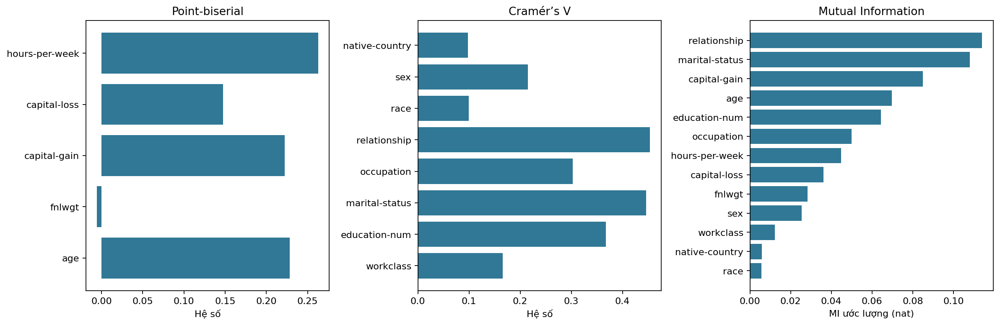

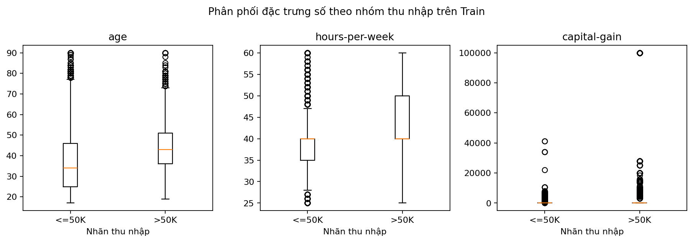

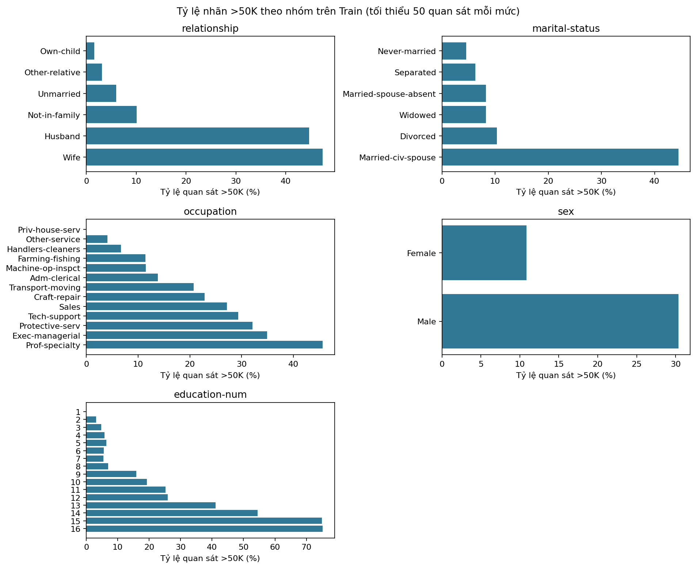
Tiền xử lý đầu vào mô hình
5.1. Nhóm đặc trưng và mã hóa
Sau sàng lọc còn 13 đặc trưng gốc. Nhãn <=50K được mã hóa thành 0 và >50K thành 1. Bộ mã hóa và hai scaler riêng học tham số trên Train gốc sau bước lựa chọn đặc trưng.
| Nhóm | Đặc trưng | Xử lý |
|---|---|---|
| Biến số (5) | age, fnlwgt, capital-gain, capital-loss, hours-per-week | Giữ thang đo sau capping cho nhánh Encoded; chuẩn hóa bằng StandardScaler cho các nhánh Scaled. |
| Biến thứ bậc (1) | education-num | Giữ mã gốc ở nhánh Encoded; chuẩn hóa bằng scaler riêng cho các nhánh Scaled. Phép chuẩn hóa giữ thứ tự và giả định khoảng cách đều giữa các mã liên tiếp. |
| Biến danh mục (7) | workclass, marital-status, occupation, relationship, race, sex, native-country | One-Hot tạo 83 cột nhị phân 0/1. Với handle_unknown='ignore', một mức chưa gặp được biểu diễn bằng toàn số 0 trong nhóm cột tương ứng. |
5.2. Ba nhánh đầu vào
| Nhánh Train | Số hàng × số cột | Mô hình | Dạng đầu vào trên Test |
|---|---|---|---|
| Encoded | 34.189 × 89 | Dummy, XGBoost | Encoded |
| Scaled | 34.189 × 89 | MLP, SVM | Scaled |
| SMOTENC Scaled | 52.016 × 89 | KNN | Scaled |
SMOTENC (k_neighbors=5, seed 42) chỉ áp dụng cho Train của KNN. Thuật toán tìm láng giềng trên các biến số đã chuẩn hóa, đồng thời giữ biến danh mục và mã học vấn ở dạng phân loại. Sau tái lấy mẫu, áp dụng One-Hot và scaler học vấn đã fit sẵn. Biến số đi thẳng vào đầu ra ở thang đã chuẩn hóa.
| Nhãn | Train gốc | Sau SMOTENC |
|---|---|---|
| 0 (≤50K) | 26.008 (76,07%) | 26.008 (50,00%) |
| 1 (>50K) | 8.181 (23,93%) | 26.008 (50,00%) |
| Tổng | 34.189 | 52.016 |
Notebook xác nhận bảy ma trận có cùng schema 89 cột, chỉ chứa giá trị số hữu hạn và khớp với nhãn tương ứng. Validation và Test chỉ được biến đổi sang Encoded và Scaled, giữ số hàng và phân phối lớp sau khi chia.
Huấn luyện và đánh giá mô hình
6.1–6.5. Cấu hình huấn luyện
Năm mô hình dùng các nhánh đầu vào ở mục 05. Tỷ số giữa số mẫu âm và dương trên Train gốc là 26.008 / 8.181 ≈ 3,1791. XGBoost và MLP dùng tỷ số này làm trọng số lớp dương. SVM tính trọng số theo tần suất lớp. KNN dùng nhánh SMOTENC Scaled.
| Mô hình | Cấu hình và thiết lập thực nghiệm |
|---|---|
| Dummy | strategy='most_frequent' trên Train gốc. Luôn dự đoán lớp phổ biến nhất. |
| XGBoost | objective='binary:logistic', eval_metric='logloss', tree_method='hist', n_estimators=1000, max_depth=4, learning_rate=0.05, subsample=0.8, colsample_bytree=0.8, min_child_weight=3, reg_lambda=2, reg_alpha=0.1, scale_pos_weight=26008/8181, random_state=42, n_jobs=-1. Early stopping sau 50 vòng không cải thiện log loss trên Validation. Dự đoán bằng 615 vòng đầu (chỉ mục tốt nhất 614). |
| MLP | 89 đầu vào → Linear(128) → ReLU → Dropout(0,3) → Linear(64) → ReLU → Dropout(0,2) → Linear(1). BCEWithLogitsLoss với pos_weight=26008/8181. AdamW với learning rate 0,001, weight decay 0,0001 và batch size 256. Tối đa 100 epoch, patience 10 theo loss có trọng số trên Validation. Áp dụng sigmoid khi dự đoán với ngưỡng 0,5. |
| KNN | n_neighbors=7, weights='distance', metric='minkowski', p=2 (khoảng cách Euclid), n_jobs=-1. |
| SVM | kernel='rbf', C=1, gamma='scale', class_weight='balanced', probability=False, cache_size=1000, random_state=42. |

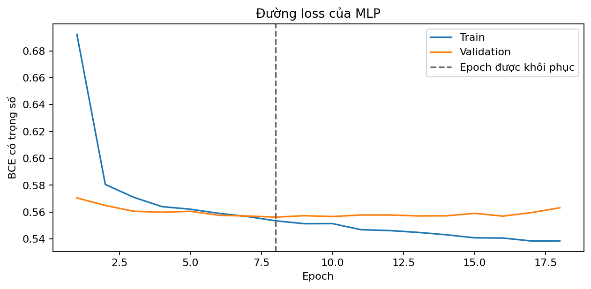
6.6. Đánh giá cuối trên Test
Cả năm mô hình được đánh giá trên cùng 7.327 mẫu Test, gồm 5.574 mẫu lớp âm và 1.753 mẫu lớp dương. Accuracy là tỷ lệ dự đoán đúng trên toàn tập. Precision, Recall và F1 được tính cho lớp dương >50K. F1 là trung bình điều hòa giữa Precision và Recall. ROC-AUC đo khả năng xếp hạng qua các ngưỡng, dùng xác suất dự đoán của Dummy, XGBoost, MLP và KNN, cùng điểm decision_function của SVM.
| Mô hình | Accuracy | Precision | Recall | F1 | ROC-AUC |
|---|---|---|---|---|---|
| XGBoost | 0,8339 | 0,6080 | 0,8608 | 0,7126 | 0,9289 |
| SVM | 0,8047 | 0,5600 | 0,8574 | 0,6775 | 0,9020 |
| MLP | 0,8011 | 0,5541 | 0,8648 | 0,6754 | 0,9108 |
| KNN | 0,7947 | 0,5510 | 0,7673 | 0,6414 | 0,8641 |
| Dummy | 0,7607 | 0,0000 | 0,0000 | 0,0000 | 0,5000 |
XGBoost dẫn đầu theo F1 (0,7126), đồng thời có Accuracy (0,8339), Precision (0,6080) và ROC-AUC (0,9289) cao nhất. MLP có Recall cao nhất (0,8648), còn SVM xếp thứ hai theo F1 (0,6775). Dummy đạt Accuracy 0,7607 vì luôn dự đoán lớp đa số, nhưng Recall và F1 của lớp dương đều bằng 0.

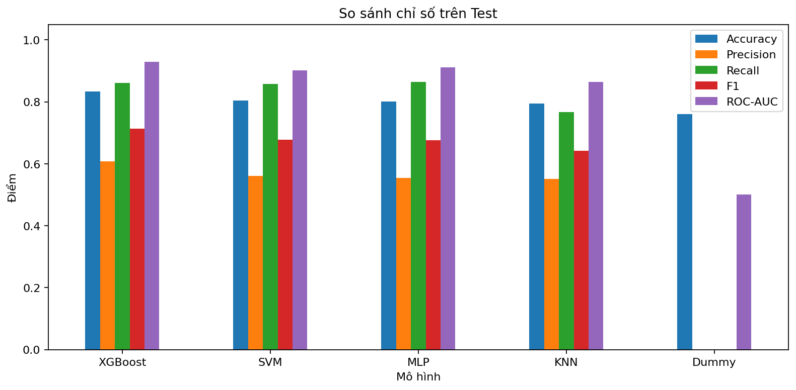

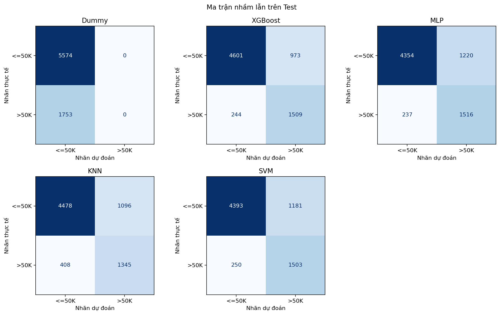

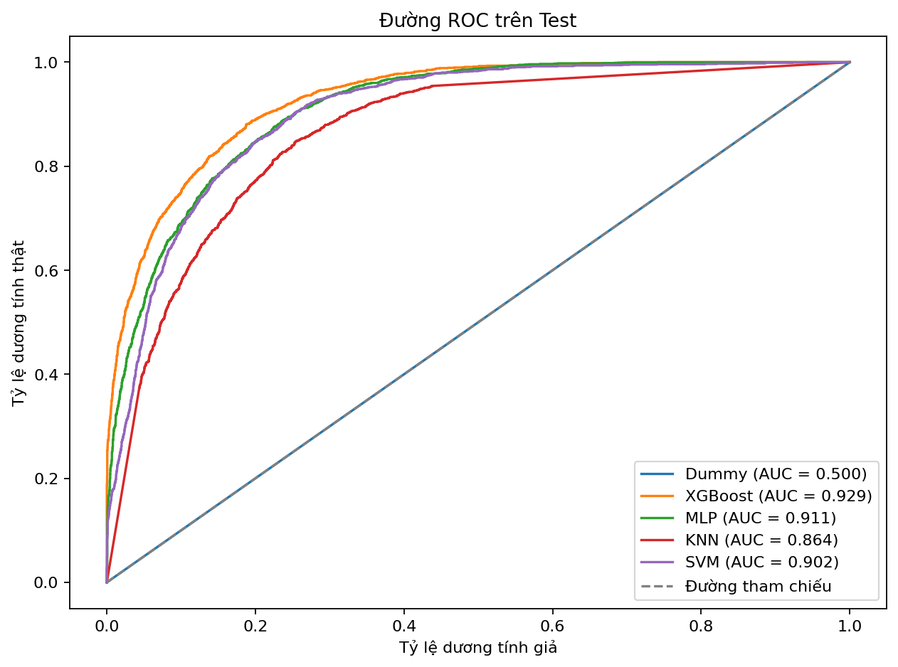
Tệp kết quả gốc gồm bảng chỉ số CSV và báo cáo phân loại theo lớp cho XGBoost, SVM, MLP, KNN, Dummy.
6.7. Tái sử dụng kết quả
Lượt chạy Colab đóng gói 35 tệp trong ba thư mục EDA_result/, Model_result/ và Saved_models/. Các tệp phục vụ tái lập gồm cấu hình mô hình và phiên bản thư viện, lược đồ và metadata tiền xử lý, kiến trúc MLP và hướng dẫn suy luận.
Tổng kết
Quy trình giữ đủ 48.842 quan sát qua bước kiểm tra ban đầu, xử lý giá trị thiếu sau chia tập và giữ 13 đặc trưng gốc. Mỗi nhánh mô hình có 89 chiều đầu vào. Trên lần chia này, XGBoost đạt F1 cao nhất cho lớp thu nhập trên 50.000 USD, còn MLP nhận diện được tỷ lệ mẫu dương cao nhất.
Kết quả mô tả một lần chia dữ liệu với seed 42. Thực nghiệm chưa ước lượng độ bất định giữa các lần chia hoặc khả năng tổng quát hóa sang thời kỳ và quần thể khác.